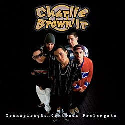
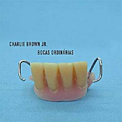

Charlie Brown Jr. foi uma banda de rock brasileira formada em Santos, em 1992, tendo em sua formação original o vocalista Chorão, o baixista Champignon, os guitarristas Marcão Britto e Thiago Castanho, além do baterista Renato Pelado. Sua discografia contabiliza dez álbuns de estúdio lançados, três álbuns ao vivo e sete DVDs. Excetuando Chorão, todos os membros da banda são naturais de Santos, uma vez que o vocalista é natural de São Paulo.
A banda encerrou suas atividades em 2013, quando na madrugada do dia 6 de março daquele ano, Chorão foi encontrado morto em seu apartamento em São Paulo, devido a uma overdose de cocaína. Posteriormente a isso os demais membros do Charlie Brown Jr. se reuniram em projetos distintos para preservar a memória de Chorão e manter o seu legado vivo. Em 2013, logo após à morte de Chorão, os membros remanescentes chegaram a mudar o nome da banda para A Banca, com Champignon assumindo os vocais. Porém o grupo encerrou as atividades em setembro do mesmo ano, após Champignon cometer suicídio em sua casa, também em São Paulo, na madrugada do dia 9 daquele mês.
| Album | Ano | Musica de Sucesso | |
|---|---|---|---|
|  | Transpiração Contínua Prolongada | 1997 | Proibida Pra Mim |
|  | Bocas Ordinárias | 2002 | Só por uma Noite |
|
Imunidade Musical | 2005 | Lutar Pelo que é Meu |